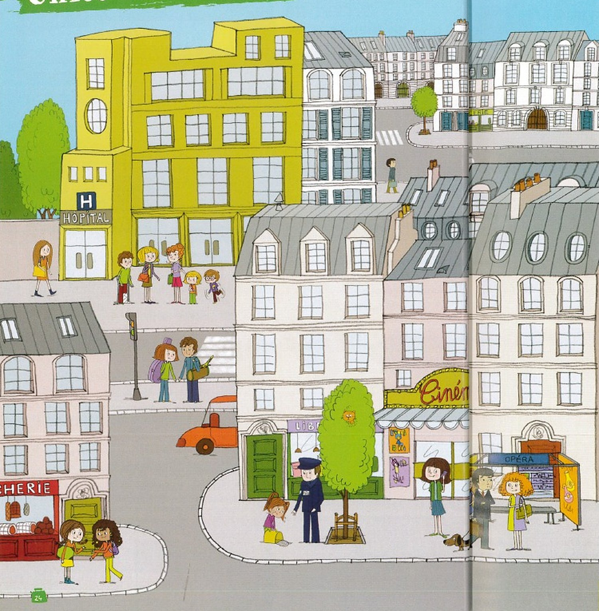
LE FRANÇAIS AVEC IRÈNE · UNITÉ 3
Que s'est-il passé ?What happened?
Ce matin, dans le quartier de l'Opéra, il s'est passé beaucoup de choses ! Le policier a besoin d'un assistant détective. C'est toi !
This morning, in the Opéra neighbourhood, lots of things happened! The police officer needs a detective assistant. That's you!
Pour résoudre l'enquête, tu dois réussir six niveaux. À chaque niveau, tu gagnes un badge.
To solve the case, you must complete six levels. At each level you win a badge.
Touche 🔊 pour écouter. Tes réponses restent enregistrées : tu peux fermer la page et revenir plus tard.
Tap 🔊 to listen. Your answers are saved: you can close the page and come back later.
⏰Réveil-matin
⚙️Maître des accords
🐱Dresseur de chat
🩹Super docteur
🕵️Détective
🏆Champion du passé
⏰Niveau 1 · Le matin de WilliamWilliam's morning12 min⚙️Niveau 2 · La machine à accordsThe agreement machine10 min🐱Niveau 3 · Le chat cascadeurThe stunt cat12 min🩹Niveau 4 · À l'hôpitalAt the hospital8 min🕵️Niveau 5 · Enquête dans le quartierInvestigation in the neighbourhood12 min🏆Niveau 6 · Le défi finalThe final challenge8 min📋À revoirThings to review
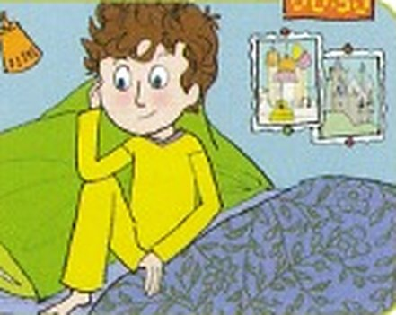
NIVEAU 1 · ≈ 12 min
⏰
Le matin de William
William's morning
Que s'est-il passé ?
What happened?
Que s'est-il passé ? et Qu'est-ce qui s'est passé ? veulent dire la même chose. On pose cette question pour savoir ce qui est arrivé.
Que s'est-il passé ? and Qu'est-ce qui s'est passé ? mean the same thing. We ask this question to find out what happened.
Pourquoi pleures-tu ? Qu'est-ce qui s'est passé ?
Why are you crying? What happened?
Cartes magiques Touche une carte pour la retourner. Tap a card to flip it.
⏰ 06:30
se réveiller
to wake up
↻
👦 William
Je me suis réveillé.
👧 Maggie
Je me suis réveillée.
I woke up.
↻
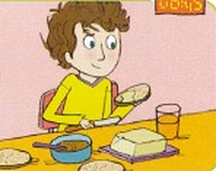
⏰ 06:45
se préparer un bon petit déjeuner
to make yourself a nice breakfast
↻
👦 William
Je me suis préparé un bon petit déjeuner.
👧 Maggie
Je me suis préparé un bon petit déjeuner.
I made myself a nice breakfast.
↻
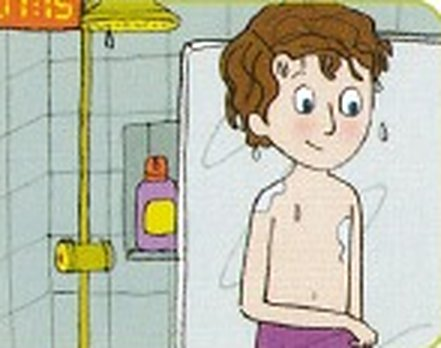
⏰ 07:15
se doucher
to have a shower
↻
👦 William
Je me suis douché.
👧 Maggie
Je me suis douchée.
I had a shower.
↻
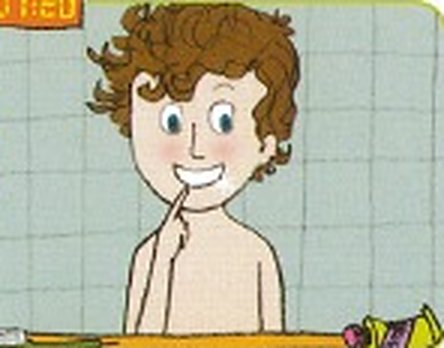
⏰ 07:20
se brosser les dents
to brush your teeth
↻
👦 William
Je me suis brossé les dents.
👧 Maggie
Je me suis brossé les dents.
I brushed my teeth.
↻
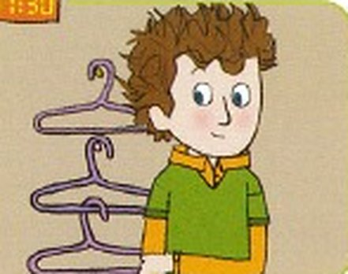
⏰ 07:30
s'habiller
to get dressed
↻
👦 William
Je me suis habillé.
👧 Maggie
Je me suis habillée.
I got dressed.
↻
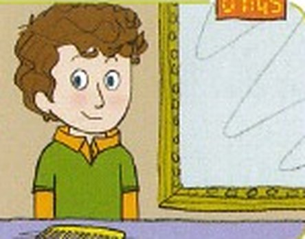
⏰ 07:45
se coiffer
to brush your hair
↻
👦 William
Je me suis coiffé.
👧 Maggie
Je me suis coiffée.
I brushed my hair.
↻
🎧 Piste 32 · Track 32
Écoute et montre.
Listen and point.
1. Je me suis brossé les dents.
I brushed my teeth.
2. Je me suis coiffé.
I brushed my hair.
3. Je me suis douché.
I had a shower.
4. Je me suis réveillé.
I woke up.
5. Je me suis préparé un bon petit déjeuner.
I made myself a nice breakfast.
6. Je me suis habillé.
I got dressed.
🎧 Piste 33 · Track 33
Écoute, mime et répète.
Listen, mime and repeat.
a. Je me suis réveillé(e).
I woke up.
b. Je me suis préparé un bon petit déjeuner.
I made myself a nice breakfast.
c. Je me suis douché.
I had a shower.
d. Je me suis brossé les dents.
I brushed my teeth.
e. Je me suis habillé.
I got dressed.
f. Je me suis coiffé.
I brushed my hair.
Le passé composé des verbes pronominaux
The passé composé of reflexive verbs
Pour raconter ce qu'on a fait, on utilise le passé composé. Avec les verbes comme se réveiller, s'habiller, se coiffer, on utilise toujours l'auxiliaire être.
To tell what we did, we use the passé composé. With verbs like se réveiller, s'habiller, se coiffer, we always use the helping verb être.
me, te, se…+être+participe passé
se réveiller→Je me suis réveillé.
je me suis réveillé(e) I woke up |
tu t'es réveillé(e) you woke up |
il s'est réveillé he woke up |
elle s'est réveillée she woke up |
nous nous sommes réveillé(e)s we woke up |
vous vous êtes réveillé(e)(s) you woke up |
ils se sont réveillés they woke up |
elles se sont réveillées they (girls) woke up |
💡 Astuce · Tip
Les verbes en -er font leur participe passé en -é : se réveiller → réveillé, se doucher → douché.
Verbs ending in -er make their past participle in -é.
1
MISSION 1
Écoute et montre.
Listen and point.
Écoute et touche la bonne image. Listen and tap the right picture.
Je me suis brossé les dents.
Écoute et touche la bonne image. Listen and tap the right picture.
Je me suis coiffé.
Écoute et touche la bonne image. Listen and tap the right picture.
Je me suis douché.
Écoute et touche la bonne image. Listen and tap the right picture.
Je me suis réveillé.
Écoute et touche la bonne image. Listen and tap the right picture.
Je me suis préparé un bon petit déjeuner.
Écoute et touche la bonne image. Listen and tap the right picture.
Je me suis habillé.
2
MISSION 2
Remets la matinée de William dans l'ordre : touche les images de la première à la dernière.
Put William's morning in order: tap the pictures from first to last.
06:30
06:45
07:15
07:20
07:30
07:45
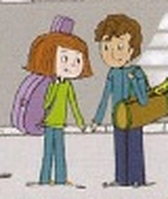
NIVEAU 2 · ≈ 10 min
⚙️
La machine à accords
The agreement machine
Avec être, le participe s'accorde
With être, the participle agrees
Avec être, le participe passé change comme un adjectif. Il s'accorde avec le sujet.
With être, the past participle changes like an adjective. It agrees with the subject.
👦un garçonréveillé
👧une filleréveillée
👦👦des garçonsréveillés
👧👧des fillesréveillées
Un garçon et une fille ensemble ? On met -s : Maty et Abdou sont repartis.
A boy and a girl together? We add -s.
🎧 Écoute bien · Listen carefully
À l'oral, on n'entend pas la différence : réveillé, réveillée, réveillés et réveillées se prononcent pareil !
When speaking, you can't hear the difference: they all sound the same!
⚠️ Attention
Quand une partie du corps vient après le verbe, on n'ajoute rien : Elle s'est brossé les dents. Elle s'est cassé le bras.
When a part of the body comes after the verb, we add nothing.
⚙️ La machine à accords · the agreement machine
1. Qui ? Who?
2. Quel verbe ? Which verb?
3
MISSION 3
Choisis la bonne fin.
Choose the right ending.
Maggie est ? dans les escaliers.
Maggie fell down the stairs.
Maggie est tombée dans les escaliers.
William est ? à vélo.
William fell off his bike.
William est tombé à vélo.
Maty et Abdou sont ? au Sénégal.
Maty and Abdou went back to Senegal.
Maty et Abdou sont repartis au Sénégal.
Leur petite sœur est ?.
Their little sister was born.
Leur petite sœur est née.
Marie, tu es ? à ton cours de guitare ?
Marie, did you go to your guitar lesson?
Marie, tu es allée à ton cours de guitare ?
Les filles se sont ? à sept heures.
The girls woke up at seven o'clock.
Les filles se sont réveillées à sept heures.
Paul et Hugo se sont ? très vite.
Paul and Hugo got dressed very quickly.
Paul et Hugo se sont habillés très vite.
Le bus est déjà ?.
The bus has already left.
Le bus est déjà parti.
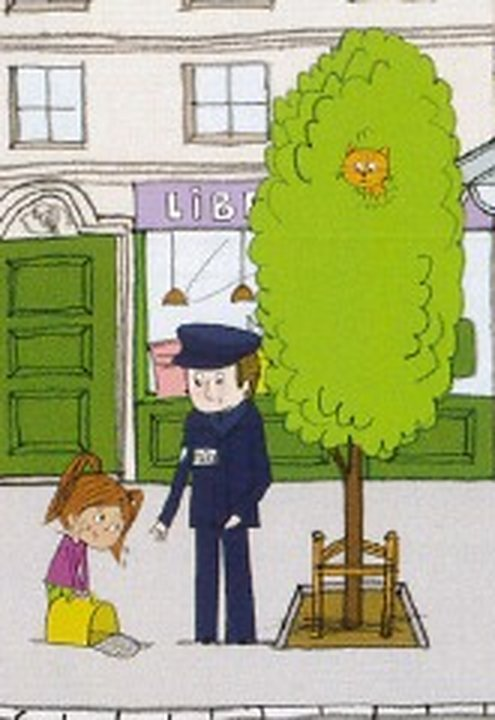
NIVEAU 3 · ≈ 12 min
🐱
Le chat cascadeur
The stunt cat
Les verbes de mouvement avec être
Verbs of movement with être
Les verbes qui expriment un mouvement (aller, partir, monter, tomber…) et aussi naître, mourir, rester utilisent l'auxiliaire être au passé composé.
Verbs that show movement (to go, to leave, to climb, to fall…) and also naître, mourir, rester use the helping verb être in the passé composé.
aller→ alléto go
arriver→ arrivéto arrive
partir→ partito leave
repartir→ repartito go back, to leave again
entrer→ entréto go in
sortir→ sortito go out, to get out
monter→ montéto go up, to climb
descendre→ descenduto come down
tomber→ tombéto fall
retourner→ retournéto go back
passer→ passéto go past, to happen
rester→ restéto stay
naître→ néto be born
mourir→ mortto die
Mon petit chat est sorti de sa caisse. Il est monté en haut de l'arbre.
My little cat got out of its box. It climbed to the top of the tree.
Maggie est tombée dans les escaliers.
Maggie fell down the stairs.
Le bus est parti il y a deux minutes.
The bus left two minutes ago.
🎬 Le chat cascadeur · touche un verbe et regarde ! tap a verb and watch!
4
MISSION 4
Regarde le chat. Qu'est-ce qu'il a fait ?
Watch the cat. What did it do?
Le chat est monté dans l'arbre.
Le chat est sorti de sa caisse.
Le chat est descendu de l'arbre.
Le chat est retourné dans sa boîte.
Le chat est parti.
5
MISSION 5
Choisis le bon participe passé.
Choose the right past participle.
Le chat est ? de sa caisse. (sortir)
The cat got out of its box.
Le chat est sorti de sa caisse.
Il est ? de la branche. (descendre)
It came down from the branch.
Il est descendu de la branche.
Leur petite sœur est ? hier. (naître)
Their little sister was born yesterday.
Leur petite sœur est née hier.
Le bus est ? il y a deux minutes. (partir)
The bus left two minutes ago.
Le bus est parti il y a deux minutes.
La dame dit : « Je suis ? ! » (arriver)
The lady says: « I've arrived! »
La dame dit : « Je suis arrivée ! »
Elle est ? au cinéma. (entrer)
She went into the cinema.
Elle est entrée au cinéma.
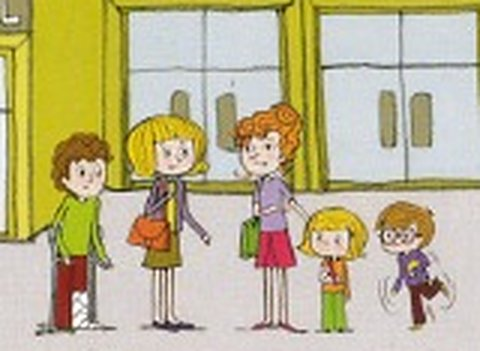
NIVEAU 4 · ≈ 8 min
🩹
À l'hôpital
At the hospital
Le corps : droit ou gauche ?
The body: right or left?
la têtethe head
le brasthe arm
la mainthe hand
la jambethe leg
le piedthe foot
droit = right · gauche = left. Avec un nom féminin, on dit droite : le bras droit, la jambe droite.
With a feminine noun, droit becomes droite.
Elle s'est cassé le bras droit.
She broke her right arm.
Il s'est cassé la jambe gauche.
He broke his left leg.
🪞 Astuce du miroir · Mirror trick
Quand une personne est en face de toi, son bras droit est de ton côté gauche !
When someone is facing you, their right arm is on your left side!
6
MISSION 6
Touche la partie cassée. Le personnage est en face de toi.
Tap the broken part. The person is facing you.
👧 Maggie s'est cassé le bras droit.
Maggie broke her right arm.
Maggie s'est cassé le bras droit.
👦 William s'est cassé la jambe gauche.
William broke his left leg.
William s'est cassé la jambe gauche.
👦 Jojo s'est cassé le pied droit.
Jojo broke his right foot.
Jojo s'est cassé le pied droit.
👧 Léa s'est cassé la jambe droite.
Léa broke her right leg.
Léa s'est cassé la jambe droite.
👦 Tom s'est cassé le bras gauche.
Tom broke his left arm.
Tom s'est cassé le bras gauche.
👧 Nina s'est cassé le pied gauche.
Nina broke her left foot.
Nina s'est cassé le pied gauche.
NIVEAU 5 · ≈ 12 min
🕵️
Enquête dans le quartier
Investigation in the neighbourhood
Les dialogues du quartier
The neighbourhood conversations
Lis et écoute les conversations. Elles vont t'aider à résoudre l'enquête !
Read and listen to the conversations. They will help you solve the case!
🎧 Piste 34 · Track 34
Écoute et montre qui parle sur la grande image.
Listen and point to who is speaking in the big picture.
a
La maman de William
Qu'est-ce qui s'est passé ?
What happened?
Jeanne
Maggie est tombée dans les escaliers à l'école. Elle s'est cassé le bras droit. Et votre fils ?
Maggie fell down the stairs at school. She broke her right arm. And your son?
La maman de William
Il est tombé à vélo. Il s'est cassé la jambe gauche.
He fell off his bike. He broke his left leg.
Jojo
Moi, je me suis cassé le pied droit l'année dernière. Maintenant ça va mieux. Regardez !
I broke my right foot last year. It's better now. Look!
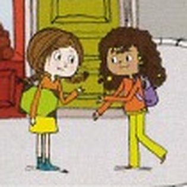
b
Alice
Salut Marie ! Maty et Abdou ne sont pas avec toi ?
Hi Marie! Aren't Maty and Abdou with you?
Marie
Non, ils sont repartis au Sénégal hier.
No, they went back to Senegal yesterday.
Alice
Ah bon ! Pourquoi ? Leur petite sœur est née ?
Oh really? Why? Has their little sister been born?
Marie
Oui et elle s'appelle Marie, comme moi.
Yes, and she's called Marie, like me.
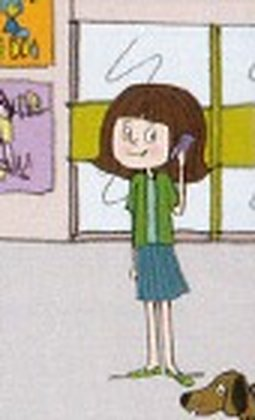
c
Une dame au téléphone devant le cinéma
Allô, c'est moi ! Tu es où ? […] Oui, je suis arrivée. Je suis devant le cinéma. […] Ah bon ! Tu es déjà entrée ? J'arrive alors !
Hello, it's me! Where are you? […] Yes, I've arrived. I'm in front of the cinema. […] Oh really! You've already gone in? I'm coming, then!
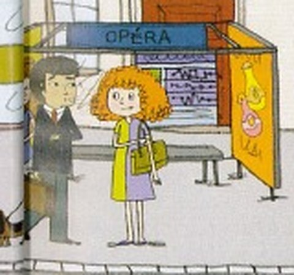
d
Un homme d'affaire
Excusez-moi madame ! Le bus pour La Défense est déjà passé ?
Excuse me, madam! Has the bus to La Défense already gone past?
Une dame
Oui, il est parti il y a deux minutes.
Yes, it left two minutes ago.
Le monsieur
Oh zut !
Oh, bother!
e
Un policier
Pourquoi pleures-tu ? Qu'est-ce qui s'est passé ?
Why are you crying? What happened?
Une petite fille
Mon petit chat est sorti de sa caisse. Il est monté en haut de l'arbre. Il ne veut pas descendre de la branche.
My little cat got out of its box. It climbed to the top of the tree. It won't come down from the branch.
f
Une adolescente
Salut ! Tu es allé au tennis ?
Hi! Did you go to tennis?
Un adolescent
Oui ! Et toi ? Tu es allée à ton cours de guitare ?
Yes! What about you? Did you go to your guitar lesson?
7
MISSION 7
Écoute et montre qui parle.
Listen and point to who is speaking.
Qui parle ? Touche l'image. Who is speaking? Tap the picture.
Pourquoi pleures-tu ? Qu'est-ce qui s'est passé ?
Qui parle ? Touche l'image. Who is speaking? Tap the picture.
Allô, c'est moi ! Tu es où ? , Oui, je suis arrivée. Je suis devant le cinéma. , Ah bon ! Tu es déjà entrée ? J'arrive alors !
Qui parle ? Touche l'image. Who is speaking? Tap the picture.
Qu'est-ce qui s'est passé ?
Qui parle ? Touche l'image. Who is speaking? Tap the picture.
Salut ! Tu es allé au tennis ?
Qui parle ? Touche l'image. Who is speaking? Tap the picture.
Salut Marie ! Maty et Abdou ne sont pas avec toi ?
Qui parle ? Touche l'image. Who is speaking? Tap the picture.
Excusez-moi madame ! Le bus pour La Défense est déjà passé ?
8
MISSION 8
Écoute et réponds.
Listen and answer.
a. Pourquoi la petite fille pleure ?
Why is the little girl crying?
Son chat est monté dans l'arbre.
b. Où est l'amie de la dame qui téléphone ?
Where is the friend of the lady on the phone?
Elle est entrée dans le cinéma.
c. À quel cours est allée la jeune fille ?
Which lesson did the girl go to?
Elle est allée à son cours de guitare.
d. Pourquoi le monsieur à l'arrêt de bus dit-il « Zut » ?
Why does the man at the bus stop say « Bother »?
Parce que son bus est déjà parti.
e. Que s'est-il passé ?
What happened?
William s'est cassé la jambe gauche.
f. Pourquoi Maty et Abdou sont-ils repartis au Sénégal ?
Why did Maty and Abdou go back to Senegal?
Leur petite sœur est née.
🎧 Piste 35 · Track 35
Écoute et réponds.
Listen and answer.
a. Pourquoi la petite fille pleure ? Son chat est monté dans l'arbre ou son chat est entré dans le cinéma ?
a. Why is the little girl crying? Did her cat climb up the tree or did her cat go into the cinema?
b. Où est l'amie de la dame qui téléphone ? Elle est entrée dans le cinéma ou elle est partie en bus ?
b. Where is the friend of the lady on the phone? Has she gone into the cinema or has she left by bus?
c. À quel cours est allée la jeune fille ? Elle est allée à son cours de guitare ou elle est allée à son cours de danse ?
c. Which lesson did the girl go to? Did she go to her guitar lesson or did she go to her dance lesson?
d. Pourquoi le monsieur à l'arrêt de bus dit-il « Zut » ? Parce que son bus n'est pas encore arrivé ou parce que son bus est déjà parti ?
d. Why does the man at the bus stop say « Bother »? Because his bus hasn't arrived yet or because his bus has already left?
e. Que s'est-il passé ? William s'est cassé la jambe gauche ou il s'est cassé le pied droit ?
e. What happened? Did William break his left leg or did he break his right foot?
f. Pourquoi Maty et Abdou sont-ils repartis au Sénégal ? Leur petite sœur est née ou leur grand-mère est morte ?
f. Why did Maty and Abdou go back to Senegal? Was their little sister born or did their grandmother die?
NIVEAU 6 · ≈ 8 min
🏆
Le défi final
The final challenge
9
MISSION 9
Lis et remets dans l'ordre. Touche les étiquettes.
Read and put the words in order. Tap the labels.
1The little girl's cat came down from the tree.
Le chat de la petite fille est descendu de l'arbre.
2It went back into its box.
Il est retourné dans sa boîte.
3Maggie fell down the stairs.
Maggie est tombée dans les escaliers.
4I brushed my teeth.
Je me suis brossé les dents.
5They went back to Senegal yesterday.
Ils sont repartis au Sénégal hier.
✍
RAPPORT D'ENQUÊTE
Raconte ton matin d'hier en 5 phrases.
Tell the story of your morning yesterday in 5 sentences.
Touche une étiquette pour l'ajouter, puis termine la phrase.
Tap a label to add it, then finish the sentence.
Ton texte est enregistré. Your text is saved.
📋 À revoir
Things to review: tap a link to go back to the rule.
Tes réponses sont enregistrées sur cet appareil. Pour continuer sur un autre appareil, crée un lien et ouvre-le là-bas.
Your answers are saved on this device. To carry on on another device, create a link and open it there.